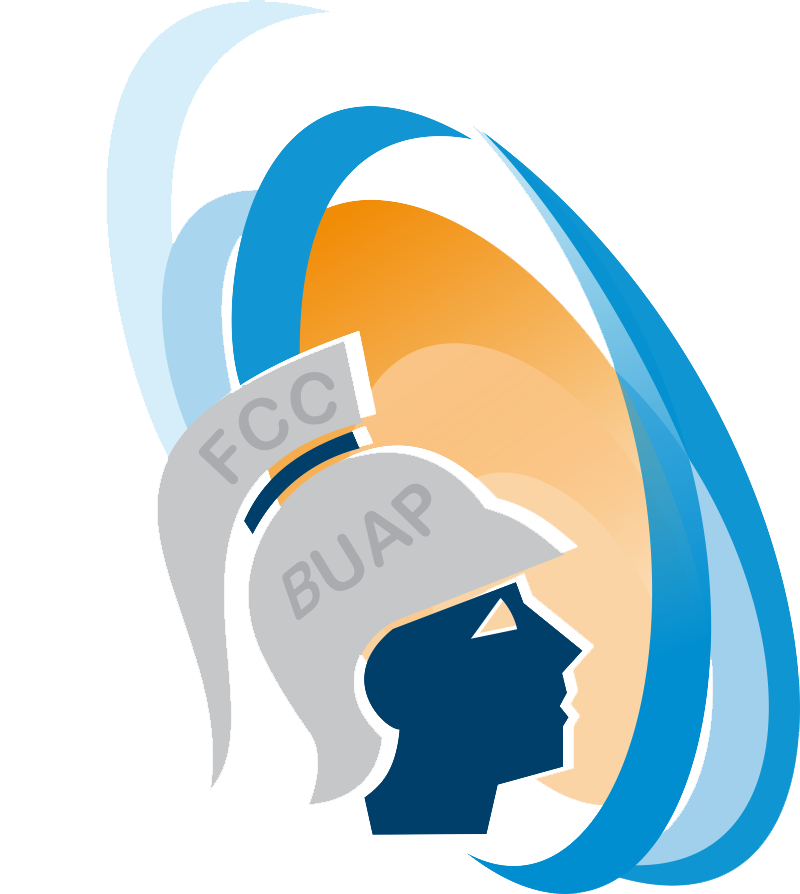
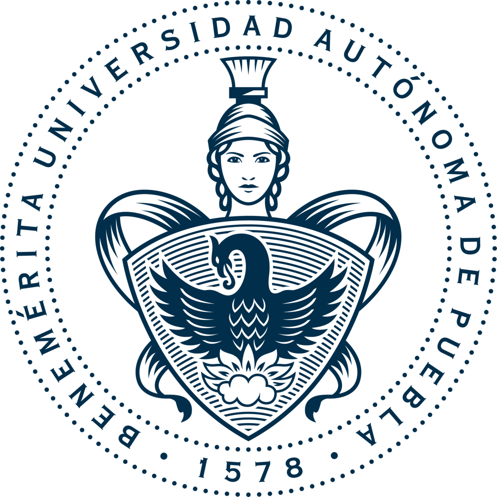

|  |  |
| Facultad de Ciencias de la Computación | Benemérita Universidad Autónoma de Puebla |
| Profesora Maya Carrillo Ruiz | |
| Ingeniería de Software | |
| Portafolio de evidencias para Ingeniería de Software | |
Presentación
Este es un sitio web en donde nosotros, el equipo javastántico, subiremos nuestras tareas y avances del proyecto evaluados en el curso de Ingeniería de Software, impartido por la profesora Maya Carrillo Ruiz.
Para poder encontrar todo el contenido de la página, le sugerimos que utilicé las pestañas de navegación que se encuentran debajo del logotipo del sitio.